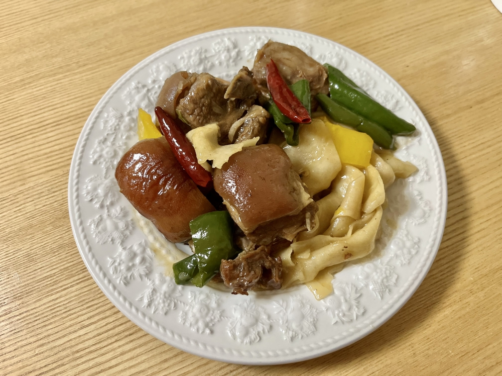

羊排焖面的做法
 羊排焖面是一道硬菜，适合聚会时候大展身手。缺点就是有点花时间，优点就是好吃，而且一道菜补齐人体所需的三大营养物质。
预估烹饪难度：★★★★
必备原料和工具
- 带皮羊排肉
- 青椒
- 甜椒
- 青椒
- 大葱
- 花椒
- 干辣椒
- 生姜
- 白砂糖
- 老抽
计算
1 人份 * 2 顿 = 2 人份
- 带皮羊排 500g
- 青椒，甜椒 各 2 个
操作
- 羊肉冷水下锅焯水，水开了之后把血沫撇掉，捞出羊肉。
- 切好生姜（ 4 片)，放入干辣椒与花椒在碗里备用。
- 在炒锅加入油。（多一点也没关系）
- 油热之后，放入白砂糖，给羊肉炒出焦糖色。
- 羊肉水份炒干之后，放入盐、老抽，以及备好的调味料。
- 加入清水没过羊肉，大火煮沸之后，让其继续煮 10 分钟，之后小火炖煮 30 分钟。
- 在此期间，可以和面。和面的量以及操作方法在附加内容里讲解 *（注 1）。
- 放入青椒，甜椒，大葱，以及面皮进行翻炒。
- 翻炒均匀之后，即可出锅。
*注 1：可以用超市的面条代替，但是尽量选择宽面。
附加内容
(和面小指南 之 材料）
- 中筋面粉 300 g
- 盐 3 g
- 水 180 ml
(和面小指南 之 操作）
- 先把材料混合均匀，加水边和边搅拌，然后把面团和到光滑
- 醒面（ 10 分钟）
- 再次和面到光滑
- 醒面（ 5 分钟）
- 把面团揉成条，切成 6 到 8 个小剂子
- 抹上油，等待 5 分钟
- 把面团剂子擀成面皮
- 放入锅中焖煮 4 分钟（一片一片操作）
如果您遵循本指南的制作流程而发现有问题或可以改进的流程，请提出 Issue 或 Pull request 。